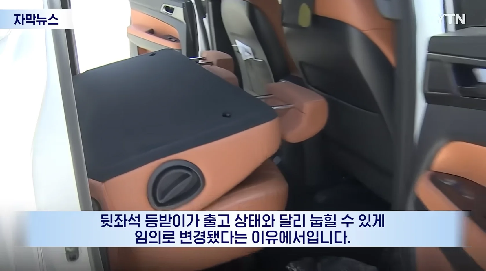
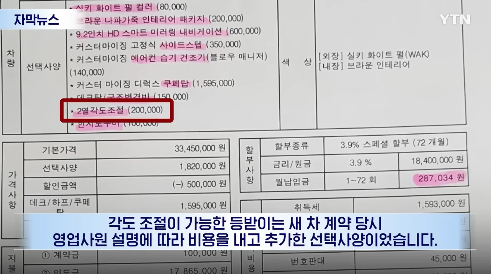
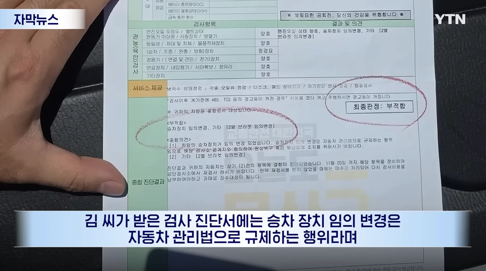
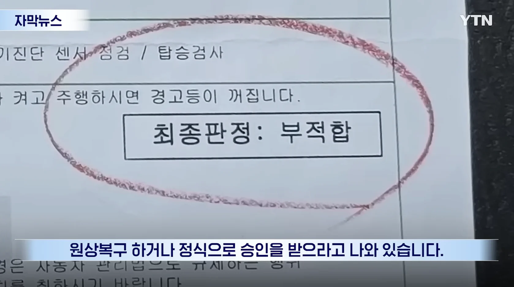
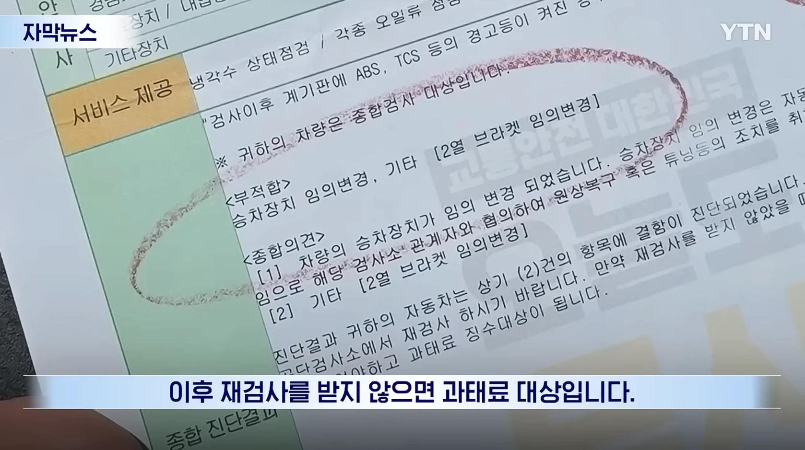
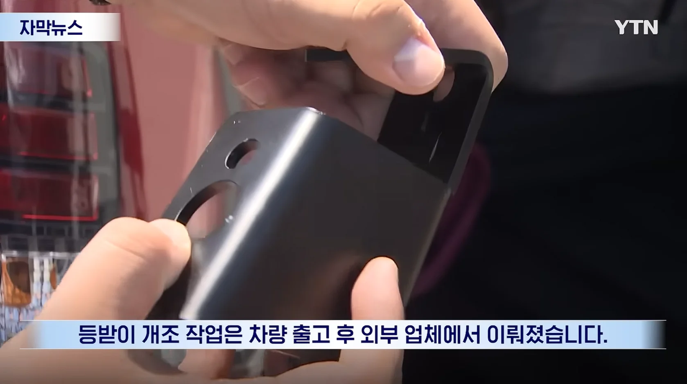
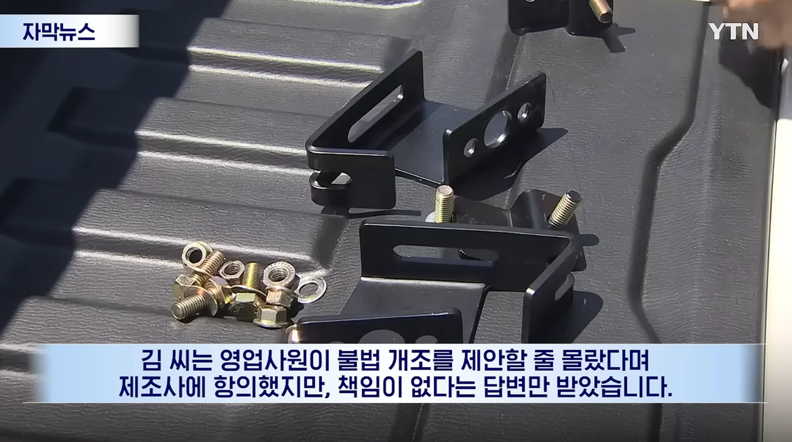
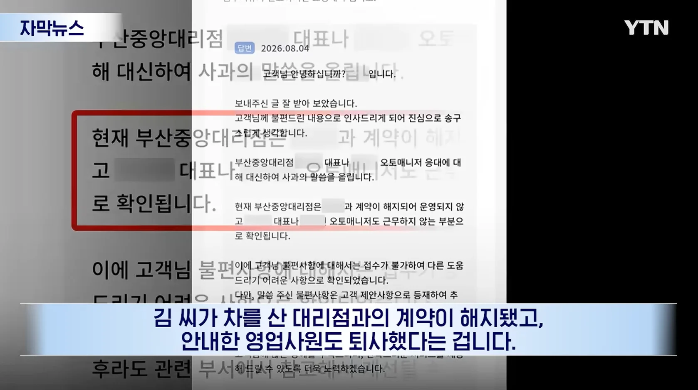
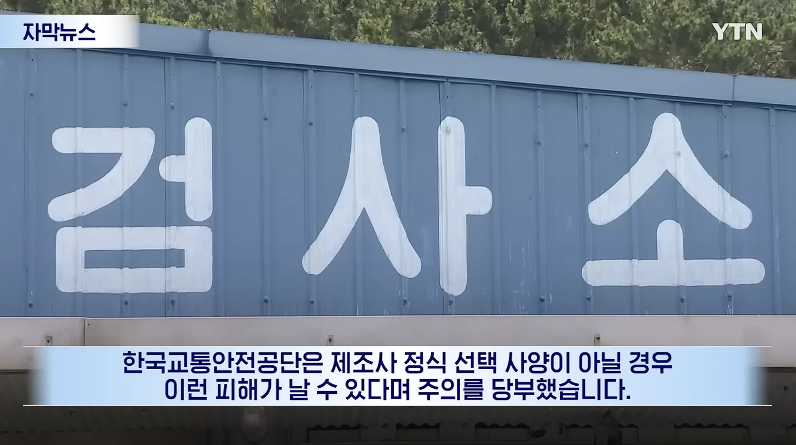
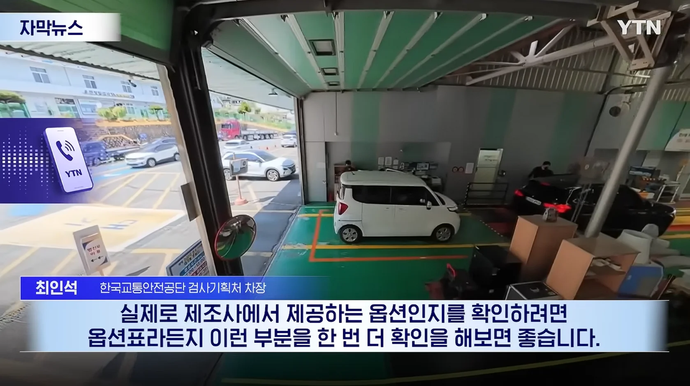

출처: YTN (바로가기)










출처: YTN (바로가기)
영업사원이 원래 기존 추가 옵션인거마냥 설명했다는거 같은데
자동차 검사소에서 저런것두 검사해?? 몰랐네
ㅇㅇ 불법 개조 같은 것은 물론 재수 없으면 평탄화 같은 편의 사양 개조 같은 것도 원복 시키라고 걸림
평탄화는 깎아낸건데 어떻게 복구하냐
저 트럭처럼 시트를 개조하는 평탄화를 말하는 거. 보통 순정 시트로 바꾸라고 함
실제있는 옵션마냥 계약서에 적어놨네ㅋㅋㅋㅋ
근데 시발 도의적인 부분도아니고 법적으로 문제생기는건데
회사측에 잘못이 없나는게 말이되나
쌍용을 사려한 죄
순간 뭔가 싶었는데 저거 트럭 모델이네 ㅋㅋㅋ 아니 저건 등받이 접히면 안됨 ㅋㅋㅋ
아니 옵션이라면서 ㅋㅋㅋ 시발 저게 무슨 옵션이야 ㅋㅋ
옵션(불법)
이었냐고...
저거 의자접히는게 유아사고로 이어질수있는거라 불법인건가
화물차이기떄문에 화물이 넘어오면 안되므로 막혀있어야함 라고 대충알고있음
급정거했을때 화물 밀려와서 의자가 못버티면 사고로 이어지니까 그런거구만
혹시 르쌍쉐야?
딜러가 돌았나 사제를 왜 옵션처럼 알려주고 자빠졌냐 그리고 쌍용차 본사는 대리점이 사라졌다고 배째는게 맞나?
어쩔수없지 ㅋㅋ 그 딜러 찾아서 고소를 하던가 해야지
누가봐도 옵션처럼 적어놨네
")
회사는 ㅅㅂ 지들 영업사원이랑 계약한건데 책임 없다는게 말이 더ㅣ나?
딜러는 개인사업자인가 회사에서 물어줘야 하는거 아님?
폰팔이랑 똑같은 구조일걸 ㅋ
직원이 문제 일으키면 그 직원을 고용한 회사가 책임 지는거고 대리점이 문제를 일으키면 대리점과 계약을 맺은 회사가 책임을 지는거지 대응 참 병신 같네 일단 보상 해주고 제조사는 문제 일으킨 대리점에 소송 걸고 대리점은 문제 일으킨 직원한테 소송하고 그러는거지
맞지
항상 직원이 퇴사하고 없다고하네
진짜 퇴사한건 맞는지 궁금하다
애초에 퇴사해도 지들직원인데 뭔 맨날 강건너 구경하듯이 말할까
차 영업사원만 보면 동네꼬마가 생각남
자 공정위 드가자
근데 계약서에 있으면 회사와 개인의 계약이니까 회사가 책임져야지 왜 직원탓을 함.
왠만하면 저렇게 까지 검사안하는데 재수옴붙었네ㅋㅋㅋ
이건 고용했던 사측이 배상해야지.
사측이랑 계약했지. 개인이랑 계약했냐.
비용 청구 + 감가 피해보상까지.
하아 미치겠네~ 등받이가 쓰던 겁니까? 새걸 사 갖고...
직원 퇴사가 뭔 상관인가 했더니 쌍용 씹 ㅋㅋㅋㅋㅋㅋ
딜러가 병신인건 둘째치고 대리점 대응이 너무 허접한데
저딴 개 양아치같은 짓거리는 사실 본사에서 일일이 들여다 보지 않는이상 본사차원에서 관리하기 힘든건 맞는데, 본사가 책임지는게 맞지 ㅅㅂ 저런식으로 대리점에서 찐빠 낸건 대리점 잘못이라 하면 앞으로 대리점을 어떻게 믿고 사냐ㅋㅋㅋ
앰비언트 라이트도 싸제로 많이 해주던데 그것도 걸리나?
내부 조명은 구조변경 신고 대상이 아니라 상관 없을껄?
시발 역시 잘알들이 많아. 고맙다.
비슷하게 티볼리 후방에 점등되는 로고 옵션
출고 후 셀프로 구조변경 필요했었지
완성차 회사에서 제시한 옵션이 아닌걸
영업사원이 제시했는데 넣었다는거임?